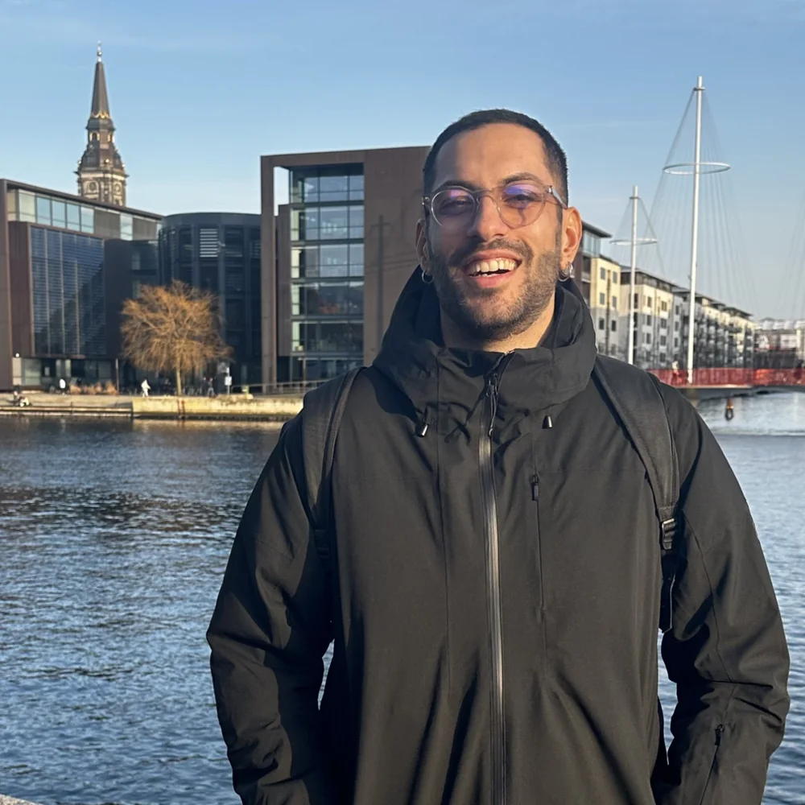
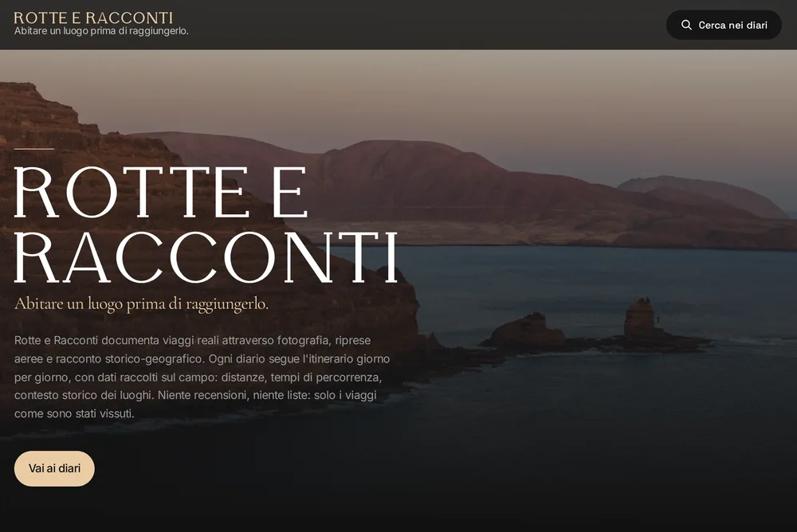

Digital Product Designer · IxDF Local Leader, Turin
I keep complex digital products coherent, usable and accessible as they scale. Design systems, AI experiences, enterprise platforms.
See how I workCase studies
Design systems, AI inside the product, conversation design: three cases on B2B enterprise platforms. Not everything I have done: the work that shows best how I think.
Three years of a multi-module system, so the next one starts out consistent.
A component system that turns conversation into work inside Askme.
80% of the flow never touches an LLM. On purpose. And everyone gains from it.
A principle that emerged
Rules before artifacts: validate the constraints before producing the output. The rework you prevent is invisible, and that is exactly why it gets undervalued.
Who is behind thisI only saw the thread in hindsight.

From outside it looks scattered. From inside it all pointed at the same thing: systems, not screens.
Read the whole storyOutside work · Personal project
A travel publishing project built from scratch with my brother: he walks the routes and documents them, I built everything else — identity, site, editorial system, strategy. This is what happens when I design something of my own, with no client.
Live, six diaries published

Photography by Emanuele. Identity, website and editorial system are mine.
Contact
Whether you have a project, a role or just a question: write to me, I actually reply.
simone.ariotti97@gmail.com